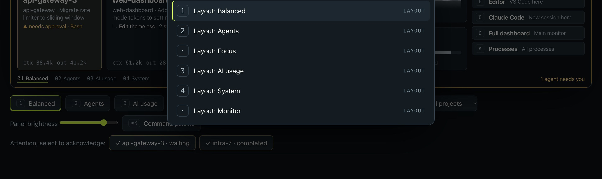

▲api-gateway-3needs approval · Bash
On the panel
The header becomes an amber alert with who is waiting, for what and for how long, and the screen edge glows.
Pitwall turns a dedicated display into a glanceable view of your Claude Code agents, your machine and your shortcuts. When an agent needs you, you see it before you go looking.

Claude Code hooks tell Pitwall the moment a session asks for approval, asks a question or fails. That turns into three signals you can't miss and won't confuse.
The header becomes an amber alert with who is waiting, for what and for how long, and the screen edge glows.
The Universal Screen's ring breathes amber while an agent waits, glows red on a failure and stays dark when all is calm.
 ▲ 1Fri 9:41
▲ 1Fri 9:41A small Dial with a count, on macOS and in the Windows tray. Global hotkeys switch layouts without leaving your editor.
Every Claude Code session as working, waiting, done, failed or idle, with its task title, latest tool and elapsed time.
Context size and token totals come from Claude Code's own transcripts. Cost is not guessed or shown.
CPU, memory, network and disk with short trends, plus GPU, battery and the busiest processes.
Open a terminal, editor or new Claude session in the current project. Only actions you list in config can run.
Six layouts out of the box. Override any of them or add your own in config.json; changes apply within two seconds.
Runs on 127.0.0.1 only. Hooks forward event names, never prompts, commands or output. Privacy mode hides names.
Switch layouts with a number key or let them rotate. Every one is a grid of widgets you can rearrange.
Agents, computer health and the launcher side by side. The default.
Pick columns and widgets, give it a number key, and the panel picks it up within two seconds. Built-ins stay available, so getting back to defaults is one delete away.
// config.json "ui": { "layouts": ["balanced", "wide", "usage"] }, "layouts": [{ "id": "wide", "name": "Wide agents", "columns": ["1300px", "1fr"], "slots": ["ai", "launcher"] }]
The panel has no touch, so nothing on it pretends to be a button. Drive it from anywhere with global hotkeys, the menu bar, or the full dashboard and its ⌘K command palette.

On Windows the same keys use Ctrl+Alt.
Clone and build one binary. macOS links libusb statically; Windows needs no cgo.
git clone https://github.com/goriparthi/pitwall cd pitwall && scripts/build.sh
Add the Claude Code hooks. Your settings file is backed up first, and uninstall is one command.
bin/pitwall hooks install
Start it in the background. No screen yet? Try the labelled demo in your browser.
bin/pitwall start bin/pitwall run --demo --no-display
Needs Go 1.26+ to build, Chrome, Edge or Brave for rendering, and Homebrew libusb on macOS at build time.